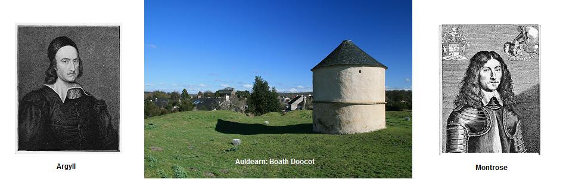

Chunna mise mo leannan
My lover passed by - Je t'ai croisé mon bien-aimé
A waulking song

* *
Sequenced by Christian Souchon
|
To the tune:
Version N°1: "Chunna mise mo leannan" (Tone background to this page) A pentatonic waulking.song , as sung by Roderick MacKinnon and recorded by Dr John Lorne Campbell for the National Trust for Scotland (disc) at Castlebay (Island Barra). from "Tobar an Dualchais" (www.tobarandualchais.co.uk/fullrecord/39682/1) Version N°2: "Horo o Hì Hòireannan" a waulking song as sung by Captain Dugald MacCormick and recorded by Calum Iain Maclean for the "School of Scottish Studies" on the Island Mull, in 1953. Permanent Link - http://www.tobarandualchais.co.uk/fullrecord/3729/1. Version N°3: "Hòro Hì Hòireannan" a waulking song as sung by Calum Nicolson and recorded by James Ross at Braes (Isle of Skye) for the "School of Scottish Studies" in June 1955; Permanent Link - www.tobarandualchais.co.uk/fullrecord/23386/1. The same "Tobar an Dualchais" site provides many other versions which all seem to be equivalent to one of the three versions above. To the lyrics: He sings 14 lines (plus chorusses). Lines 6, 10 and 11 have been repeated. In some versions, there are also references to Mull, to the Clan MacLean and to the Duke of Argyll. - 'Hebridean Folksongs' vol. 3 (Campbell/Collinson) p. 156. - 'An t-Òranaiche' (Gilleasbaig Mac na Ceàrdadh) p. 504. - 'Òrain Luaidh Màiri nighean Alasdair' (K. C. Craig) p. 34. - 'Gaelic Songs in Nova Scotia' (Creighton/MacLeod) p. 190. - 'Folksongs and Folklore of South Uist' (M. F. Shaw) Song 90; Stanza 5 in the 1st song corresponds with stanza 8 in the second one, but with reverse meaning: "cha b'ann aige bha choire" (It is not he who was at fault) instead of "cha bu mise bu choire" (It is not I who was at fault). |

|
A propos de la mélodie:
Version N°1: "Chunna mise mo leannan" (Fond sonore de cette page) Il s'agit d'un chant de foulage . interprété par Roderick MacKinnon et enregistré par John Lorne Campbell pour le "National Trust for Scotland" (disque) à Castlebay (Île de Barra). Tiré de "Tobar an Dualchais" (www.tobarandualchais.co.uk/fullrecord/39682/1) Version N°2: "Horo o Hì Hòireannan" Chant de foulage interprété par le Capitaine Dugald MacCormick et enregistré par Calum Iain Maclean pour la "School of Scottish Studies" à l'île de Mull, en 1953. Lien permanent - http://www.tobarandualchais.co.uk/fullrecord/3729/1. Version N°3: "Hòro Hì Hòireannan" Chant de foulage interprété par Calum Nicolson et enregistré par James Ross at Braes (Île de Skye) pour la "School of Scottish Studies" en juin 1955; Lien permanent - www.tobarandualchais.co.uk/fullrecord/23386/1. Le même site "Tobar an Dualchais" propose un grand nombre d'autres versions qui toutes peuvent se ramener, semble-t-il, à l'un des trois présents archétypes. A propos des paroles: Son interprétation porte sur 14 vers (plus refrains) avec répétition des vers 6, 10 et 11. Certaines versions font référence à Mull, au Clan McLean et au Duc d'Argyle. - 'Hebridean Folksongs' vol. 3 (Campbell/Collinson) p. 156. - 'An t-Òranaiche' (Gilleasbaig Mac na Ceàrdadh) p. 504. - 'Òrain Luaidh Màiri nighean Alasdair' (K. C. Craig) p. 34. - 'Gaelic Songs in Nova Scotia' (Creighton/MacLeod) p. 190. - 'Folksongs and Folklore of South Uist' (M. F. Shaw) Song 90; La strophe 5 du 1er chant correspond à la strophe 8 du second mais le sens est inversé: "cha b'ann aige bha choire" (ce n'est pas à lui qu'incombe la faute) devient "cha bu mise bu choire" (ce n'est pas à moi...). |

|
Chorus Na hi u i ho-rin ò, Na hi o chall eile; Na hi u i ho-rin ò. 1. Yesterday you did not, my love, Recognize me, as you passed by. 2. I went up to the cattlefold And I saw you, my dear, draw nigh. 3. You were riding up to the pass On a grey horse with a light foot, 4. You neither noticed me, poor lass, Nor enquired, how was my mood. 5. You are not the one to be blamed, I am the cause of your dislike. 6. The blame be on me, I'm ashamed, Whom the blow of love first did strike! 7. With your shotgun on your shoulder You were hunting for mountain stags, 8. And with blood of a speckled deer Were speckled your tatters and rags. 9. O boatman, do not sail over , Before you mend your rending sail! 10. I prefer, aye, a Highlander Whose scarce flock would be of avail. 11. But my sweetheart has learnt to wield A gun, to embark to Ireland. 12. Yesterday on the training field, He fought, all attacks he did stand. 13. May, Clan Donald, victory's breath On Sunday inspire your sharp axe, 14. People with burdens of plain death, In the brown pouches on your backs, 15. People whose every dazzling gun Inflicts many a deadly sore; 16. People whose sabres in the sun Glitter in your arrays, galore. 17. And people whose pointed dagger Will spring out of your belted plaid, 18. Who in Auldearn took the oath And on the Bible gave this pledge: 19. Don't sheath, on your avenging tours, Before our King James was restored, 20. The usurper sent out of doors, Till this day dawned, don't sheath your sword! |
Luinneag Na hi u i ho-rin ò, Na hi o chall eile; Na hi u i ho-rin ò. 1. Chunna mise mo leannan, 'S cha do dh-aithnich e 'n de mi. 2. Chunna mise mo luaidh 'Dol seachad buaile na spréidhe; 3. 'S e a direadh a bhealach, Air each glas nan ceum eutrom. 4. Cha do dh-fhiosraich, 's cha d' fharraid, 'S cha do ghabh e mo sgeula. 5. Cha b' ann aige bha choire, Ach nach d' fhuirich mi féin ris. 6. Gur h-ann shuas air an àiridh Thug mi, 'ghraidh, a chiad spéis duit. 7. Bhiodh do ghunn' air do ghualainn Dol a ruagadh na h-éilde: 8. 'S gheibhteadh fuil an daimh bhallaich Ann am bannan do léine. 9. Cha taobh mise fear bàta Ged a chàradh e bréid rith'. 10. 'S mor gu'm b' fheàrr leam fear mullaich, D' am biodh grunnan beag spréidhe. 11. Fear a rachadh do 'n mhunadh Le a ghunna mu 'n Eirinn. 12. Tha mo gaol-s' de na còmhlainn Anns a chòmhrag nach géilleadh. 13. Sian nan soraidh 's an Dòmhnaich Le Clann-Dòmhnaill nan geur lann, 14. Luchd nan calpanna troma, Nan cùl donna 's nan réidh bhàs. 15. Luchd nam musgaidean dubha, 'Dheanadh bruthadh is reubadh. 16. Luchd nan claidheanna geala, 'Chuireadh faileas ri gréin diu. 17. Is luchd tarruinn nam biodag, 'Bhiodh air criosan an fhéile. 18. Thug iad mionnan a Bhiobuill A dol sios gu Allt Eireann , 19. Nach cuirt' claidheabh an truaill leo, 'S am biodh buaidh le Righ Seumas, 20. 'S gus am faict' a luchd-fograidh 'Dol 's na còrdaidh na 'éirig. |
Refrain Na hi u i ho-rin ò, Na hi o chall eile ; Na hi u i ho-rin ò. 1. Je t'ai croisé mon bien-aimé Hier, tu ne m'as pas reconnue. 2. Je t'ai croisé, mon adoré, Près du bercail j'étais venue. 3. Et toi, tu chevauchais, là-haut, Une monture au pied léger. 4. Tu ne m'as pas dit un seul mot Ni ne t'enquis de ma santé. 5. Ce n'est pas toi qu'il faut blamer, Mais moi qui n'ai pas su te plaire. 6. Comment t'aurais-je mérité? C'est moi qui t'aimai la première. 7. Avec sur l'épaule un fusil, Tu t'en allais chasser la biche. 8. Et le sang d'un daim tacheté Maculait aussi ta chemise. 9. Oh, n'approche pas, batelier! Ta voile à se rompre s'apprête! 10. Moi, je préfère un Highlander Et son petit troupeau de bêtes. 11. Il faut qu'il apprenne à manier Le fusil et aille en Irlande. 12. Hier il était au combat Où l'on s'est battu sans se rendre. 13. Clan Donald au sabre acéré, Sois, dimanche, orage invincible, 14. Toi dont transportent les molets Une charge de mort docile; 15. Toi le peuple des mousquets blancs Causant des blessures mortelles; 16. Toi le peuple aux sabres d'acier Qui sous le soleil étincellent; 17. Toi, le peuple dont les poignards Jaillissent des plaids, des ceintures; 18. Tu le juras, à Auldearn , Et par les Saintes Ecritures: 19. Ne remets le sabre au fourreau, Avant que ne triomphe Jacques, 20. Que le départ de ses bourreaux Nous offre ce joyeux spectacle! |
Gura Mise Tha Fo Mhulad
The Non-Jacobite ballad which could be the foundation of the above verses
|
I AM SORROWFUL
Chorus: (after each verse): 'S na horo hì hoireannan Horo chall eile 'S na horo hì hoireannan 1. It is I that am sorrowful On a hillock, great is my grief 2. I saw my love He did not recognize me yesterday 3. He neither noticed me nor enquired He didn't ask me how I was 4. I saw you going up To the cattlefold 5. He passed me by On a grey horse with a light step 6. On a nimble-footed horse Lively at jumping the bog 7. My baby is in my arms I am without sustenance under the sun for him 8. I was not at fault It was himself that was at fault 9. That I wander around alone Seeking food of every woman for him The background is the McDonald of the Isles Tartan as published in the "Vestiarium Scoticum" in 1842. |
GURA MI 's THA FO MHULAD
Sèist: 'S na horo hì hoireannan Horo chall eile 'S na horo hì hoireannan 1. Gura mis' tha fo mhulad Air an tulaich 's mòr m' èislean 2. Chunna mise mo leannan Cha do dh'aithnich e 'n dè mi 3. Cha do dh'fhidir, 's cha d' fharraid Cha do ghabh e dhìom sgeula 4. Chunna mise dol suas thu Gu buaile na sprèidhe 5. 'S ann a ghabh e orm seachad Air each glas nan ceum eutrom 6. Air each glas nan ceum lùthmhor 'Ghearradh sùnndach an fhèithe 7. Tha mo leanabh nam achlais 'S mi gun taice fo'n ghrèin dha 8. Cha bu mhise bu choireach 'S ann bu choireach e fhèin ris 9. Mar a thèid mi 'nam ònar 'G iarraidh lòn air gach tè dha. |
JE SUIS EPLOREE
Refrain (après chaque strophe): 'S na horo hì hoireannan Horo chall eile 'S na horo hì hoireannan 1. Je suis éplorée Sur cette colline grand est mon chagrin. 2. J'ai vu mon amant hier. Il ne m'a pas reconnue. 3. Il a fait mine de ne pas me voir Et ne m'a pas demandé comment j'allais. 4. Oui, je t'ai vu monter Vers le bercail 5. Il est passé à côté de moi Sur un cheval gris au pied léger 6. Sur un cheval au pied agile Prompt à sauter à travers le marais 7. J'ai mon nourrisson dans les bras Et rien sous le soleil pour subvenir à ses besoins. 8. Ce n'est pas moi qui suis fautive C'est à lui qu'incombe la faute 9. Si j'erre seule Mendiant de la nourriture auprès de toutes les femmes. Le "papier peint" est le tartan "McDonald des Îles" tiré du recueil "Vestiarium Scoticum" de 1842. |
|
|
||
| Click to know more about CLAN DONALD |